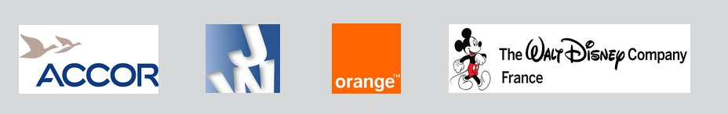

Formation en alternance où les missions sont la production de contenus pour les 23 pays participant à la stratégie Réseaux Sociaux d'Accor.
Intégrant le pôle Marketing, la mission principale de ce stage était de promouvoir et de développer la société de recrutement Jefferson Wolfe par l’intermédiaire des réseaux sociaux (Facebook, Twitter, LinkedIN, Google +, Xing) et d'élaborer une newsletter.
Au sein de l’équipe Communication Interne et Externe de la Direction des Ventes Indirectes d’Orange Business Services, ce stage consistait au développement et à l’animation des communautés de partenaires ayant la certification de OBS sur les réseaux sociaux. Les missions concernaient principalement la mise en place des actions de développement des communautés pro et de partenaires sur Facebook, LinkedIn et Twitter en assurant des publications régulières, ainsi que la création d'événements internes et externes pour développer l’usage des réseaux sociaux au sein de la Direction Ventes Indirectes. Le but de cette fonction est de favoriser l'interactivité des partenaires entre eux mais également avec OBS.
Travail en partenariat avec la chef de projet Web TV Programmation et animation éditoriale des 4 pages et sites TV de Disney.fr (Accueil TV regroupant les infos des différentes chaines TV, Disney channel étant la chaîne familiale, Disney Junior pour les petits de 3 à 7 ans et Disney XD pour les adolescents).
Le choix de cette université a été motivé par le fait que cette école de commerce accorde une place importante au E-Marketing, restant ainsi en cohérence avec les acquis étudiés en Licence Professionnelle Marketing et Commerce sur Internet.
Ecole spécialisée dans les NTIC - la majeure faite en dernière année est Marketing Digital.
Cette licence portant sur le Web a pour vocation d'étudier des enseignements relatifs à tous les métiers du Web. Les sujets principaux sont les suivants : E-Marketing, E-Communication, Web Rédaction, E-Business, Web Design...
Visites de différents pays tels que l'Inde (Chennai et Pondichéry), les Etats-Unis (côte Ouest), l'Espagne (Vigo, Barcelone, San Sebastian).
Passion pour la photographie de paysages et de portraits.